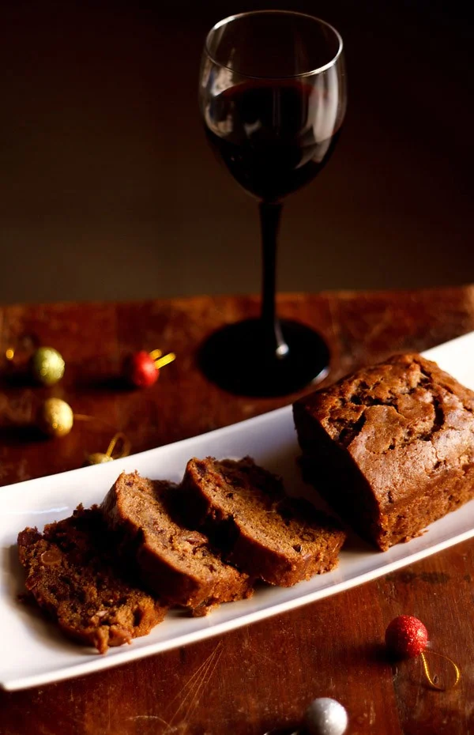
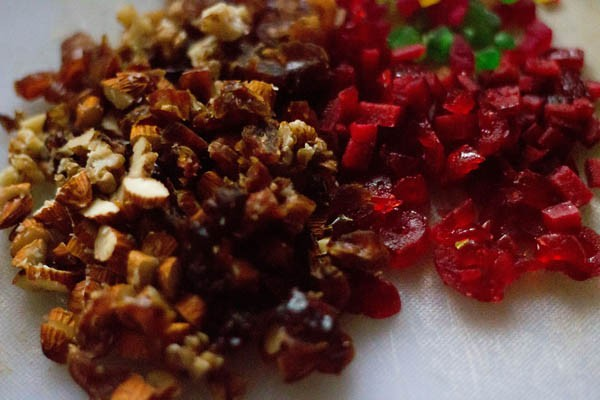
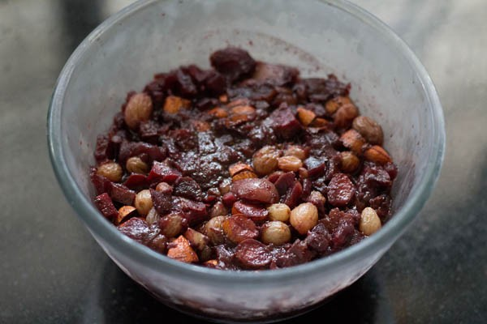
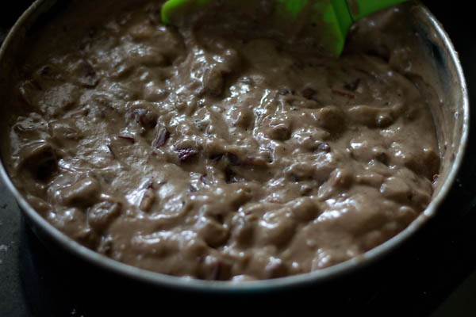
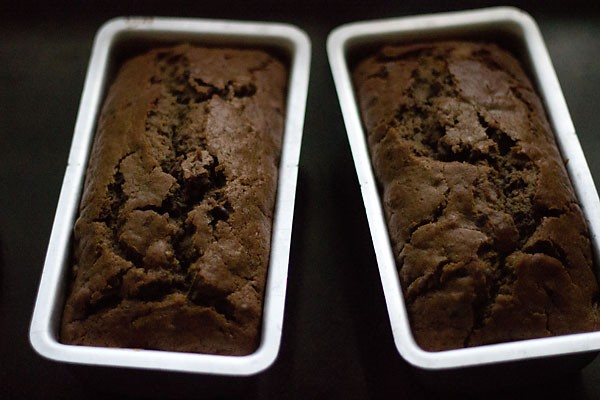
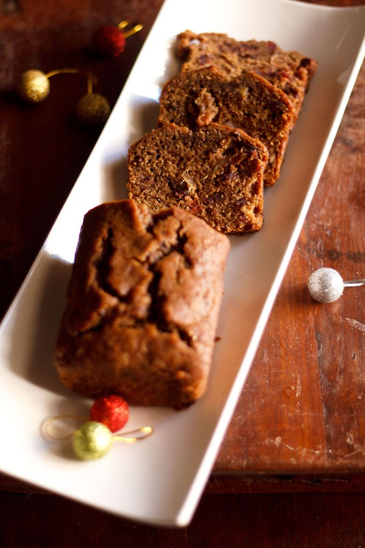

Wine Cake Recipe
Feeling the nip in the air along with things beginning to look like Christmas, then this joyous festival is not too far! This is also exactly when you know that its that time of the year, when you would go on a baking spree at home to make cakes, pies, tarts and other similar desserts. Here’s just the perfect eggless version of a boozy red Wine Cake that’s going to bring you all the love and warmth with its decadent flavors, and make you happy high! This is one of those Eggless Cakes, which is also all things festive and fun.
How to make Wine Cake
Soak Nuts & Dry fruits In Wine
1. First chop ½ cup seedless dates, ¼ cup almonds, ¼ cup cashews, 4 to 5 halved walnuts, 5 to 6 glazed red cherries and a few candied orange peels and candied ginger.
You will require 1 tablespoon each of the chopped candied orange peels and candied ginger.
2. In a bowl or jar, soak the chopped nuts and dry fruits in 1 cup red wine. Cover and keep this bowl or jar in a cool, dry place.
I kept the bowl out for 3 days, and then for the remaining days, I kept in the refrigerator. Every alternate day, shake the jar or stir the soaked ingredients in the bowl.
3. The soaked nuts and dry fruits on the 14th day.
Make Wine Cake
4. Sieve 2 cups all-purpose flour (maida) with 1 pinch salt, ½ teaspoon baking soda and 1 teaspoon baking powder.
Add ¼ teaspoon cinnamon powder, ¼ teaspoon grated nutmeg and 1 teaspoon instant coffee. Mix well.
Also remember to preheat your oven for 15 minutes at 200 degree C/390 degrees F.
5. Now, add the soaked nuts and dry fruits, ½ cup + 2 tablespoons dark brown sugar (or brown sugar) and 2 tablespoons curd (yogurt) dissolved in 1 tablespoon water.
6. Add ¾ cup oil, ½ cup milk and 1 teaspoon vanilla extract or essence.
7. Fold the wet ingredients into the dry ingredients.
8. Pour the prepared batter in a greased or butter paper lined cake pan. I used 2 cake pans of 3.5 x 7.5 inches width.
9. Bake the cake in a preheated oven for 200 degree C/390 degrees F for about 50 minutes to 1 hour. The time taken to bake will vary depending upon your oven.
10. Place the loaf pan/pans on a wired rack to cool. When the Wine Cake has cooled, remove it gently from the pan.
When the cake is completely cooled, wrap the cake in an aluminium foil or cling film and allow the cake to mature for 2 to 3 days (at room temperature or in the fridge) before serving. I served it after 3 days.
